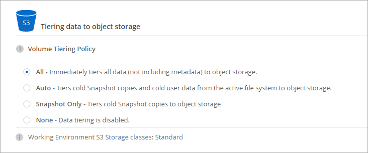
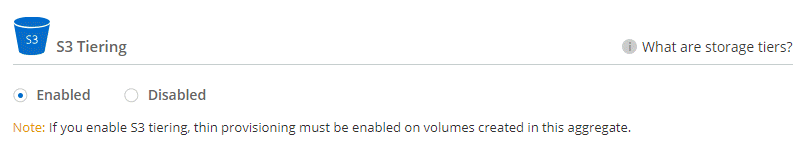

Richiedi modifiche alla documentazione
Richiedi modifiche alla documentazione Modifica questa pagina
Modifica questa pagina Scopri come collaborare
Scopri come collaborareVai alla documentazione per la versione più recente.
Tiering dei dati inattivi su storage a oggetti a basso costo
Collaboratori
È possibile ridurre i costi di storage per Cloud Volumes ONTAP combinando un Tier di performance SSD o HDD per i dati hot con un Tier di capacità dello storage a oggetti per i dati inattivi. Per una panoramica generale, vedere "Panoramica sul tiering dei dati".
Per impostare il tiering dei dati, è sufficiente eseguire le seguenti operazioni:
 Scegliere una configurazione supportata
Scegliere una configurazione supportata
Sono supportate la maggior parte delle configurazioni. Se si dispone di un sistema Cloud Volumes ONTAP standard, Premium o BYOL con la versione più recente, si consiglia di procedere. "Scopri di più".
 Garantire la connettività tra Cloud Volumes ONTAP e lo storage a oggetti
Garantire la connettività tra Cloud Volumes ONTAP e lo storage a oggetti
-
Per AWS, è necessario un endpoint VPC per S3. Scopri di più.
-
Per Azure, non dovrai fare nulla finché Cloud Manager dispone delle autorizzazioni necessarie. Scopri di più.
-
Per GCP, è necessario configurare la subnet per Private Google Access e impostare un account di servizio. Scopri di più.
 Scegliere un criterio di tiering quando si crea, modifica o replica un volume
Scegliere un criterio di tiering quando si crea, modifica o replica un volume
Cloud Manager richiede di scegliere una policy di tiering quando si crea, modifica o si replica un volume.

|
Cosa non è richiesto per il tiering dei dati? (8217
|
Configurazioni che supportano il tiering dei dati
È possibile abilitare il tiering dei dati quando si utilizzano configurazioni e funzionalità specifiche:
-
Il tiering dei dati è supportato con Cloud Volumes ONTAP standard, Premium e BYOL, a partire dalle seguenti versioni:
-
Versione 9.2 in AWS
-
Versione 9.4 in Azure con sistemi a nodo singolo
-
Versione 9.6 in Azure con coppie ha
-
Versione 9.6 in GCP
Il tiering dei dati non è supportato in Azure con il tipo di macchina virtuale DS3_v2.
-
-
In AWS, il Tier di performance può essere SSD General Purpose, SSD IOPS con provisioning o HDD ottimizzati per il throughput.
-
In Azure, il Tier di performance può essere costituito da dischi gestiti da SSD Premium, dischi gestiti da SSD Standard o dischi gestiti da HDD Standard.
-
In GCP, il Tier di performance può essere SSD o HDD (dischi standard).
-
Il tiering dei dati è supportato dalle tecnologie di crittografia.
-
Il thin provisioning deve essere attivato sui volumi.
Requisiti per il tiering dei dati cold in AWS S3
Assicurarsi che Cloud Volumes ONTAP disponga di una connessione a S3. Il modo migliore per fornire tale connessione consiste nella creazione di un endpoint VPC per il servizio S3. Per istruzioni, vedere "Documentazione AWS: Creazione di un endpoint gateway".
Quando si crea l’endpoint VPC, assicurarsi di selezionare la regione, il VPC e la tabella di routing che corrispondono all’istanza di Cloud Volumes ONTAP. È inoltre necessario modificare il gruppo di protezione per aggiungere una regola HTTPS in uscita che abilita il traffico all’endpoint S3. In caso contrario, Cloud Volumes ONTAP non può connettersi al servizio S3.
Requisiti per il tiering dei dati cold nello storage Azure Blob
Non è necessario configurare una connessione tra il Tier di performance e il Tier di capacità, purché Cloud Manager disponga delle autorizzazioni necessarie. Cloud Manager abilita un endpoint del servizio VNET se la policy di Cloud Manager dispone delle seguenti autorizzazioni:
"Microsoft.Network/virtualNetworks/subnets/write",
"Microsoft.Network/routeTables/join/action",Le autorizzazioni sono incluse nella versione più recente "Policy di Cloud Manager".
Requisiti per tierare i dati cold in un bucket di storage Google Cloud
-
La subnet in cui risiede Cloud Volumes ONTAP deve essere configurata per l’accesso privato a Google. Per istruzioni, fare riferimento a. "Documentazione Google Cloud: Configurazione di Private Google Access".
-
È necessario disporre di un account di servizio con il ruolo di amministratore dello storage predefinito. Quando si crea un ambiente di lavoro Cloud Volumes ONTAP, è necessario selezionare questo account di servizio.
-
Assegnare il ruolo predefinito Storage Admin all’account del servizio di tiering.
-
Aggiungere l’account del servizio Connector come Service account User all’account del servizio di tiering.
È possibile fornire il ruolo dell’utente "nel passaggio 3 della procedura guidata quando si crea l’account del servizio di tiering", o. "assegnare il ruolo dopo la creazione dell’account di servizio".
Sarà necessario selezionare l’account del servizio di tiering in un secondo momento quando si crea un ambiente di lavoro Cloud Volumes ONTAP.
Se non si attiva il tiering dei dati e si seleziona un account di servizio quando si crea il sistema Cloud Volumes ONTAP, è necessario spegnere il sistema e aggiungere l’account di servizio a Cloud Volumes ONTAP dalla console GCP.
-
Tiering dei dati dai volumi di lettura/scrittura
Cloud Volumes ONTAP è in grado di tierare i dati inattivi su volumi di lettura/scrittura per uno storage a oggetti conveniente, liberando il Tier di performance per i dati hot.
-
Nell’ambiente di lavoro, creare un nuovo volume o modificare il livello di un volume esistente:
Attività Azione Creare un nuovo volume
Fare clic su Add New Volume (Aggiungi nuovo volume).
Modificare un volume esistente
Selezionare il volume e fare clic su Change Disk Type & Tiering Policy (Modifica tipo di disco e policy di tiering).
-
Selezionare una policy di tiering.
Per una descrizione di questi criteri, vedere "Panoramica sul tiering dei dati".
Esempio

Cloud Manager crea un nuovo aggregato per il volume se non esiste già un aggregato abilitato al tiering dei dati.

Se preferisci creare aggregati, puoi abilitare il tiering dei dati sugli aggregati quando li crei.
Tiering dei dati dai volumi di protezione dei dati
Cloud Volumes ONTAP può eseguire il tiering dei dati da un volume di protezione dei dati a un livello di capacità. Se si attiva il volume di destinazione, i dati si spostano gradualmente al livello di performance man mano che vengono letti.
-
Nella pagina ambienti di lavoro, selezionare l’ambiente di lavoro che contiene il volume di origine, quindi trascinarlo nell’ambiente di lavoro in cui si desidera replicare il volume.
-
Seguire le istruzioni fino a raggiungere la pagina di tiering e abilitare il tiering dei dati allo storage a oggetti.
Esempio

Per assistenza nella replica dei dati, vedere "Replica dei dati da e verso il cloud".
Modifica della classe di storage per i dati a più livelli
Dopo aver implementato Cloud Volumes ONTAP, è possibile ridurre i costi di storage modificando la classe di storage per i dati inattivi a cui non è stato effettuato l’accesso per 30 giorni. I costi di accesso sono più elevati se si accede ai dati, pertanto è necessario prendere in considerazione questo aspetto prima di modificare la classe di storage.
La classe di storage per i dati a più livelli è estesa a tutto il sistema, non a it per volume.
Per informazioni sulle classi di storage supportate, vedere "Panoramica sul tiering dei dati".
-
Dall’ambiente di lavoro, fare clic sull’icona del menu, quindi su Storage CLASSES o Blob Storage Tiering.
-
Scegliere una classe di storage e fare clic su Save (Salva).
È possibile abilitare il tiering dei dati su un aggregato esistente?
No, non è possibile abilitare il tiering dei dati su un aggregato esistente. È possibile attivare il tiering dei dati solo su nuovi aggregati.
È possibile abilitare il tiering dei dati su un nuovo aggregato "creando un aggregato" oppure creando un nuovo volume con il tiering dei dati attivato. Cloud Manager creerebbe quindi un nuovo aggregato per il volume se non esiste già un aggregato abilitato al tiering dei dati.